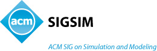

OMNeT++Workshop2010
3nd International Workshop to be held in conjunction with Simutools 2010
Malaga, Spain
Call for Papers
3rd international OMNeT++ Workshop to be held in conjunction with SIMUTools 2010 Malaga, Spain, March 19, 2010
Sponsored by:
 |  |
OMNeT++ is a public-source, component-based, modular and open-architecture simulation environment with strong GUI support and an embeddable simulation kernel. Its primary application area is the simulation of communication networks. Because of its generic and flexible architecture it has been successfully used in other areas like the simulation of IT systems, queuing networks, hardware architectures, and business processes. OMNeT++ is rapidly becoming a popular simulation platform in the scientific community as well as in industrial settings. Several open source simulation models have been published, in the field of Internet simulations (IP, IPv6, MPLS, etc), mobility and ad-hoc simulations and other areas. However, such a growing community also faces growing challenges and problems: Integration of different simulation tools, porting of simulation models between different platforms, testing and comparison of applications. Different initiatives were taken in the last years for unifying and integrating the already existing simulation models, which involves however also organization and coordination among the different user groups. An important task is making the existing tools and applications easily available.
The goal of this workshop is to bring together OMNeT++ users and their tools, applications and ideas. It intends to provide a forum for presentations of recent developments and novel ideas in the broad context of network simulation with focus on OMNeT++. It will bring together researchers to focus on the important topics of integrating simulation models, coupling different simulation tools, providing better modeling approaches, and contributing to the active modeling and simulation community with respect to identifying some of the most promising candidate solution methods, architectures and techniques to address the various challenges of network simulation. The benefits are two-fold: On the one hand OMNeT++ users get into direct discussion and on the other hand they can meet with developers. Furthermore, the developers can pick up ideas for the future development.
Topics of interest include, but are not limited to:
- Parallel simulation
- Simulation control
- Result interpretation and analysis
- Debugging
- Simulation in the loop
- Modeling techniques
- Coupling with other simulation/emulation tools
- Integration of hardware-specific code
- Cross-layer protocol design methodologies
- Mobility models
- Simulation of wireless networks and P2P networks
- Industrial applications
- Use of OMNeT++ in other domains
Submission Instructions
Papers must be written in English and must not exceed 8 pages for long papers, and 4 pages for short papers. Authors should submit papers through EasyChair (http://www.easychair.org/conferences/?conf=omnet2010) in PDF format, complying with the ACM conference proceedings format. Submitted papers must not have been submitted for review or published (partially or completely) elsewhere. In case of double submissions or (self-)plagiarism, the paper will be excluded from the technical program. Every paper will be peer-reviewed by at least three different individuals. In exceptional circumstances, papers may not receive full-length reviews and may receive early rejection notice; if they are deemed out of scope, for instance. Papers will be accepted based on originality, correctness, and quality of writing. At least one author of each accepted paper must register and present the work at the conference.
The event is organized by ICST and CreateNet, in technical cooperation with ACM SIGSIM, ACM SIGMETRICS and SCS. (approval pending) The papers that are accepted and presented at the conference will appear in CD proceedings, in the ACM DL, and in EU-DL.
Important Dates
- Full paper (extended): December 1, 2009
- Rebuttal period: January 9 - January 16, 2010
- Notification: January 20, 2010
- Final version: February 1, 2010
- Conference: March 19, 2010
Workshop Organization
Workshop chair
- Günter Schäfer, TU Ilmenau University
TPC vice-chairs
- Andreas Lewandowski, TU Dortmund University
- Antonio Ruzzelli, University College Dublin
Publicity co-chairs
- Jerome Rousselot, Centre Suisse d'Electronique et Microtechnique (CSEM)
- Juan-Carlos Maureira, INRIA Sophia Antipolis, France
Steering committee
- Falko Dressler, Univ. of Erlangen
- Anna Förster, Univ. of Lugano
- Christoph Sommer, Univ. of Erlangen
- Andras Varga, Simulcraft Inc.
- Andreas Willig, TU Berlin
Program Commitee
- Ingmar Baumgart, TU Karlsruhe
- Roland Bless, TU Karlsruhe
- John Buford, Avaya Research Labs
- Bogan Ciubotaru, Dublin City University
- Isabel Dietrich, Univ. Erlangen
- Thomas Dreibholz, Univ. Duisburg
- Stephen Farrell, Trinity College Dublin
- Anirüddha Gokhalé, Vanderbilt Univ.
- Konstantinos Katsaros, AUEB
- Andreas Lagemann, TU Cottbus
- Jun Lei, Univ. Göttingen
- Hermann Lichte - University of Paderborn
- Tom Parker, Imperial College London
- Dan Pescaru, Univ. of Timisoara
- Alfonso A. Quintana, Univ. Málaga
- Stefan Rührup, Univ. of Ottawa
- Thomas Schmidt, HAW Hamburg
- Ahmet Sekercioglu, Monash University
- Michael Tüxen, FH Münster
- Matthias Wählisch, FU Berlin
- Klaus Wehrle, RWTH Aachen
- Christian Wietfeld, TU Dortmund
- Daniel Willkomm, TU Berlin
- Lars Wischhof, Audi Electronics Venture
- Georg Wittenburg, FU Berlin
- Adam Wolisz, TU Berlin
- Eitan Zahavi, Mellanox Technologies
Site search:
March, 19nd.
Slides Availables
see Technical Program for download.
February, 2nd.
Register
through the SIMUTools 2010 web site (early registration deadline: Feb 15)
January, 26th.
List of accepted papers published
More details click here
January, 21th.
Camera Ready Instruction available for Authors
More details click here
January, 9th.
Rebuttal process opened
More details click here
November, 13th.
CFP deadline extended to December 1
More details click here
October, 1st.
Important Dates
More details click here
September, 27th.
Call for Papers Released.
More details click here
|
|
| (approval pending) |
|  |
 |